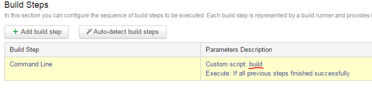
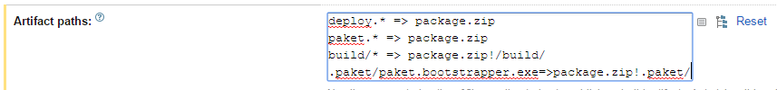
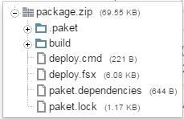
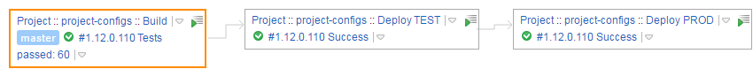
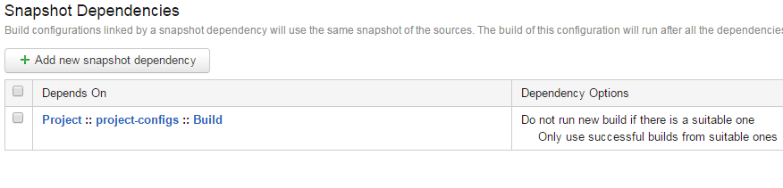
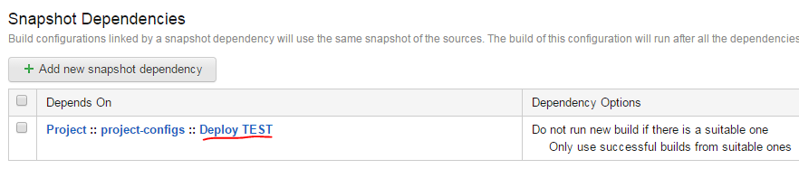
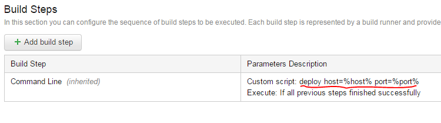

Continuous delivery with FAKE, Paket and TeamCity
Efficient continuous delivery process can speed up greatly development cycle, improve feedback loop and help to manage automatic deployments.
In this entry I'll present how one can configure a continuous delivery chain using combination of following tools: FAKE, Paket and TeamCity.
Assumptions
Let's start with defining goals of the process as described in this post:
- Each push to master branch has to trigger a build on the build server,
- The build server builds up a package, runs a suite of tests upon that package and exposes the package as a build artifact with its specific version,
- The package can be deployed to
TESTenvironment only if the build succeeded, - The package can be deployed to
PRODenvironment only if it was already deployed toTESTbefore (and tested there), - In order to verify which version is in what environment, all runs are marked with the build version,
- There are scripts for both build and deploy steps, written with help of common tools.
For the sake of this example, we'll build a very simple package containing a single file. The deploy part boils down to firing a HTTP POST request with contents of the file in the request's body. This minimal setup can be later extended to more sophisticated use cases.
Some TeamCity concepts are used throughout the entry, which are not explained, so in case of any doubts refer to the docs.
Build scripts
In the first turn, we need to bootstrap Paket.
Then let's create paket.dependencies to pull FAKE library as well as other packages for testing:
1: 2: 3: 4: 5: 6: 7: 8: 9: |
|
Next, let's add build.fsx FAKE script:
1: 2: 3: 4: 5: 6: 7: 8: 9: 10: 11: 12: 13: 14: 15: 16: 17: 18: 19: 20: 21: 22: 23: 24: 25: 26: 27: 28: 29: 30: 31: 32: 33: 34: 35: 36: |
|
What "Build" target does in above snippet is copying file from src to build directory, but you can imagine that there occurs some process of building instead.
In addition to that, "Build" target sets the TeamCity build number to X.X.X.X format, where first three numbers (major, minor, patch) are read from the first line of RELEASE_NOTES.md and the last number is taken from the TeamCity build counter (always incremented).
Finally add build.cmd helper script (for Unix you can create corresponing .sh script):
1: 2: 3: 4: 5: 6: 7: 8: 9: 10: 11: 12: 13: 14: |
|
Deployment scripts
Now, let's move to creating scripts for automatic deployment.
For that reason, at the end of paket.dependencies file we'll add a dependency group:
1: 2: 3: 4: 5: 6: |
|
This dependency group will allow to restore packages needed for deploy part only, i.e. FAKE to run the deploy script and a helper HTTP client library, Http.fs-prerelease.
Deploy script written in FAKE can look like something between those lines:
1: 2: 3: 4: 5: 6: 7: 8: 9: 10: 11: 12: 13: 14: |
|
And the corresponding deploy.cmd (note the additional group deploy for restore command and deploy in packages directory):
1: 2: 3: 4: 5: 6: 7: 8: 9: 10: 11: 12: 13: 14: |
|
Building package on TeamCity
Creating appropriate build configuration on TeamCity gets pretty easy now:
- Attach VCS Root,
- Add VCS Trigger,
- Define a single Command Line build step,
- Specify Artifacts path.
Command for the build step is just build (runs the build.cmd script):

To create the package, we need:
- deploy scripts
deploy.*(includes fsx and cmd) - paket files
paket.*(includes dependencies and lock file) - artfiacts from
build/*directory paket.bootstrapper.exe

The resulting package will look like below:

TeamCity Deploy chain
Having passed tests and built the package on TeamCity, we can now create a following deployment chain:

This can be achieved by defining new TeamCity configurations Deploy TEST and Deploy PROD (below list applies to both configurations):
- Specify artifact dependency,
- Specify snapshot dependency,
- Add single Command Line build step,
- Fill in appropriate parameters.
Both TEST and PROD environment need the same artifact dependency built from Build configuration:

Note the "Build from the same chain" option. It ensures that the same package is used for both Deploy configurations.
In order to unzip contents of the package.zip in working directroy, we have to type package.zip!** in the "Artifacts Path" field.
Deploy configurations will differ with regards to snapshot dependency. The Deploy TEST configuration should depend on Build:

and Deploy PROD should depend on Deploy TEST:

For the command line step, we'll just have to call deploy (possibly with passing parameters for target environment host and port):

Summary
With this setup, every push to the master branch will trigger Build configuration.
If the tests pass, package.zip gets created and exposed as the configuration's artifact.
Successful Build enables next step, which is Deploy TEST.
It can be done either manually, or in automatic fashion as well (for instance by attaching a build trigger).
Deploy PROD behaves in similar way - it can be run only if Deploy TEST was executed successfully.
It's also useful to subscribe to TeamCity notifications upon successful deployment, so that we're always up-to-date with latest deployments. As of version 8.1.3 TeamCity supports Email, IDE Notifier, Jabber and Windows Tray notifiactions.
module List
from Microsoft.FSharp.Collections
--------------------
type List<'T> =
| ( [] )
| ( :: ) of Head: 'T * Tail: 'T list
interface IEnumerable
interface IEnumerable<'T>
member GetSlice : startIndex:int option * endIndex:int option -> 'T list
member Head : 'T
member IsEmpty : bool
member Item : index:int -> 'T with get
member Length : int
member Tail : 'T list
static member Cons : head:'T * tail:'T list -> 'T list
static member Empty : 'T list
Full name: Microsoft.FSharp.Collections.List<_>
Full name: Microsoft.FSharp.Collections.List.head
Full name: Microsoft.FSharp.Core.ExtraTopLevelOperators.sprintf